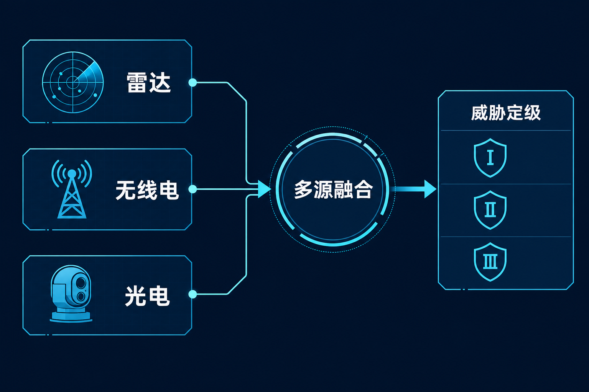
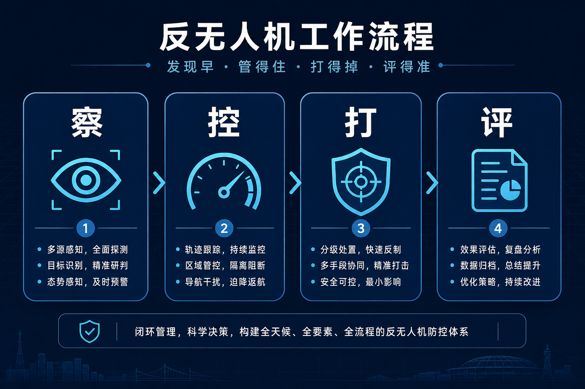

导读 本文面向公安及城市低空安全管理部门，用大白话拆开「非合作无人机」为何难管，并说明业内如何用多源融合把「看得见」推进到「定得了、管得住」。
导语：报备能管住「听话的」；难的是不报备的那一拨
公安部近日公开推动「一登二查三申请」：登记、查空域、该申请就申请。这套口诀，管的是愿意合规的飞手。
可城市空域里还有另一类目标：不主动广播身份、关闭或规避常见通信链路、甚至保持无线电静默，行业常称其为「非合作」目标。它既可能是未经报备的黑飞，也可能是改装、自制类飞行器。
看得见吗？分得清是鸟、风筝还是无人机吗？定得了威胁等级、进得了处置流程吗？
一 先分清：合作目标与非合作目标差在哪
可以把低空目标粗分成两类。
• 第一，合作目标。通常完成实名登记，飞行前查询空域；在管制空域按规定申请。部分机型会通过远程识别（RID）等方式广播身份与位置信息，便于监管侧核对「天上这个，是不是库里那个」。
• 第二，非合作目标。不报备、不申请，或刻意降低可探测性：不广播身份、减少可截获信号、低空慢速贴着复杂背景飞。对值守人员来说，它往往「突然出现」，又「很难一眼定性」。
• 第三，难处不在「有没有法」，而在「发现—识别—比对」是否连续。条例和发布会可以把边界划清；现场若看不见、认不出、对不上报备库，处置只能靠事后追查。
合规口诀解决「怎么飞」；非合作目标考验的是「怎么看见」。
二 为什么单靠一种传感器不够
业内常用的探测手段各有长处，也各有盲区。
• 第一，无线电侦测。擅长发现正在发射遥控/图传信号的目标，便于测向与告警；一旦目标静默或换用非常规链路，线索会变弱。
• 第二，雷达。对「低慢小」有持续搜索能力，受光照影响小；但在城区杂波、鸟群、地面移动物体干扰下，需要更多信息才能稳健确认「这是无人机」。
• 第三，光电（可见光/红外）。适合跟踪、取证、目视确认；受天气、遮挡、夜间与距离影响大，单独使用难以做全域值守。
• 第四，RID 与报备数据。对合作目标是「身份身份证」；对非合作目标，恰恰可能缺失——所以它是融合里的重要一路，但不能当成唯一一路。

雷达、无线电、光电与 RID 等信息交叉印证，才能更稳地「看见」
实战里更稳妥的做法，是把多路探测放进同一套态势：同一目标，用不同传感器交叉印证，降低漏报与误报。
单点设备解决「某一种看见」；融合才解决「敢不敢定级」。
三 落地要注意什么：从融合看到闭环
对公安与城市低空安全管理部门，非合作目标治理建议抓住三步。
• 第一，建统一态势，而不是堆孤立终端。雷达告警、无线电告警、光电画面、RID/报备信息，应汇到同一指挥界面，避免「每个科室一张图」。
• 第二，把「看见」推进到「定级」。发现后要能判断：似鸟还是似机、是否进入关注空域、是否未报备、是否逼近重点目标。行业常用威胁等级（如Ⅰ/Ⅱ/Ⅲ 级）区分提醒、加强值守与更高强度依法处置，避免一刀切。
• 第三，把处置与留痕接上。定级之后是出警、劝离、依法处置还是升级协同，都要可记录、可复盘。否则下次险情来了，还是从头摸索。

「察 · 控 · 打 · 评」：融合之后，还要进得了处置与复盘
业内把这条链概括成「察 · 控 · 打 · 评」。其中「察」对非合作目标，关键正是多源融合：雷达 + 无线电 + 视频 + RID 等信息交叉验证，提升对「低慢小」的识别可靠性。
羽嘉科技「猎场一号」警用低空防务智能实战平台，按公安业务流程把上述能力做成可调度闭环：兼容主流侦测反制设备，支撑多源融合态势、威胁定级与处置留痕，服务重大活动值守与城市常态管控。
非合作目标不怕「难」，怕城市只有设备、没有融合与流程。
结 口诀管合规，融合管异常
「一登二查三申请」让愿意合规的人有路可走。
真正托住城市低空秩序的，还要回答另一半：不报备、不广播、不好好飞的目标，看得见、认得准、定得了级、留得下痕。
低空经济越热闹，非合作目标治理越要走在前面。
— 本文为行业技术科普；不涉及具体反制参数与部署点位
—— 关于我们 ——
羽嘉科技，城市级低空安全解决方案提供商，「猎场一号」警用低空防务智能实战平台研发者。
让低空管理从「被动应对」转向「主动防控」。
免责声明：本文为行业技术科普与治理观察，不涉及具体反制技术参数与部署点位；仅供行业交流参考，不构成任何决策依据。如有侵权请联系删除。